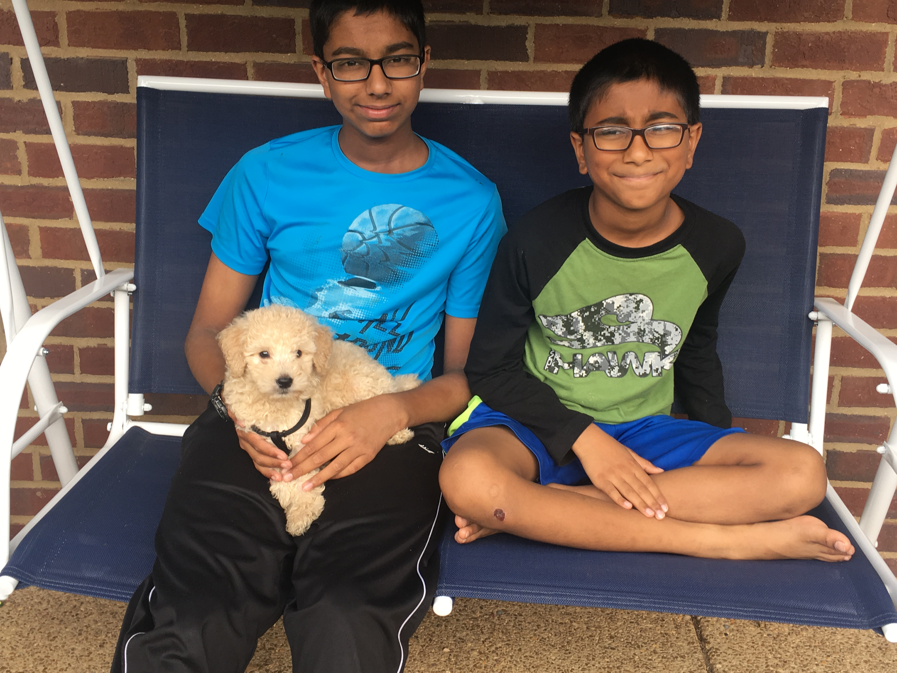
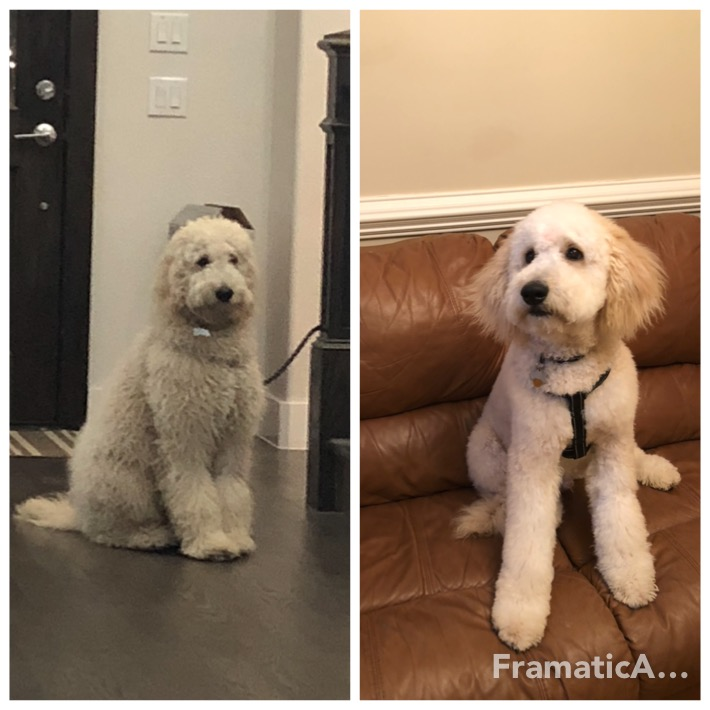

Elmo is our first dog in our house. He is a golden doodle standard.
Goodlen doodles are cross between golden retriever and poodles. Elmo is born for two goldendoodle dogs.
For more information about the breed
First few days were really happy and hectic days. It was really tiredsome days of endless potty accidents and mischeifs.
He will wake up and play at night times. He bought so much happiness in our house.
My three boys!

Look how naughty and cute our Elmo is...
Elmo the Boss
Elmo became family soon and he loves indian food. He loves Idly, Dosa and specialy home made fresh yogurt. Yogurt rice is his favourite.
He loves to go outside and meet people. He enjoys long walk outside.He Loves to chase leaves and anything moves.
Elmo's first haircut.

He is quite a chewer he chewed part of the wall,yes wall in the living room.
The joy and happiness overcomes the hard time and naughtiness.
Elmo loves to play in the backyard and get muddy and dirty. Arrrr..... time to clean the paws and clean the floor...